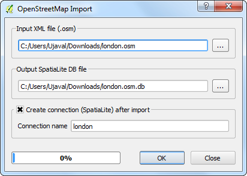
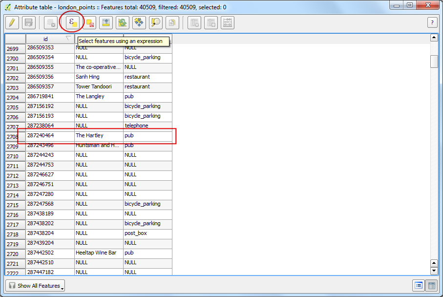
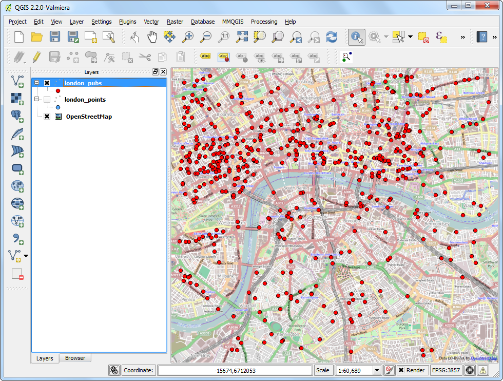

Mencari dan mengunduh data OpenSteetMap
Memperoleh data berkualitas tinggi adalah hal yang penting untuk setiap tugas GIS. Satu sumber data yang sangat bagus, gratis dan berlisensi terbuka yakni OpenStreetMap(OSM) . Database OSM terdiri dari jalan, data lokal seperti poligon bangunan. Akses pada data OSM dalam format GIS sudah terintegrasi dalam QGIS. Tutorial ini menjelaskan proses untuk mencari, mengunduh dan menggunakan data OSM di QGIS
Tinjauan Tugas
Carilah London di database OSM, jelajahi dan pilih sebagian dari kota ini, dan ekstrak semua lokasi bar sebagai shapefile
Prosedur
Kita akan menggunakan 2 plugins untuk menuntaskan tugas ini. Pastikan anda sudah menginstall plugin OSM Place Search dan OpenLayers . Lihat docs/using_plugins untuk instruksi dalam mengunduh plugins.

Plugins OSM Place Search akan terinstall otomatis sebagai Panel di QGIS. Anda dapat melihat sebuah panel berjudul OSM place search... di QGIS

Plugin OpenLayers terinstall pada menu Plugin. Plugin ini membolehkan anda untuk mengakses basemap fari berbagai provider di QGIS. Mari buka basemap OpenStreetMap di QGIS dengan mengakses .

Anda akan melihat sebuah Peta Dunia yang dibuka di QGIS
Catatan
Jika anda tidak dapat melihat data apapun - pastikan anda berstatus online - karena basemap diakses dengan internet. Anda dapat menggunakan tool Pan untuk menggerakkan kanvas map, dimana hal ini bisa memancing perangkat untuk membuka ulang basemap

Sekarang, mari mencari London. Ketik query atau pertanyaan pada kotak Name contains... di panel OSM Place Search. Anda dapat mengambangkan kursor mouse pada hasil dan tempat hasil pencarian akan ditandai pada peta. Pilih hasil yang pertama - yaitu kota London di UK - dan klik tombol Zoom

Anda akan melihat layer dasar bergerak dan fokus di sekitar kota London. Anda dapat menggunakan tool Zoom untuk menzoom dan memilih area tertentu sesuai ketertarikan anda, Untuk tutorial ini, anda dapat menzoom di tengah-tengah kota sebagaimana yang akan ditunjukkan

Sekarang anda dapat mengunduh data yang dilampirkan pada kanvas peta. Akses .

Pada dialog Download OpenStreetMap data , pilih From map canvas sebagai the Extent. Pilih alamat dan nama dari file yang dihasilkan as london.osm.

File yang sudah terunduh dengan ekstensi .osm adalah file teks pada <http://wiki.openstreetmap.org/wiki/OSM_XML>`_ format. Pertama-tama kita harus mengkonversikan fili ini menjadi format yang cocok yang mudah untuk dikonsumsi di QGIS. Akses Vector –> OpenStreetMap –> Import topology from XML.
Catatan
Sekarang kita tidak memerlukan fungsi OSM Place Search, anda dapat mengklik tombol close untuk menghapusnya dari jendela utama. Jika anda ingin memakainya kembali, anda dapat mengaktifkannuya dari (Windows) atau (Linux).

Pilih file london.osm yang udah diunduh sebagai Input XML file . Beri nama Output SpatiaLite DB file sebagai london.osm.db . Patikan tombol Create connection (SpatiaLite) after import tercontreng atau aktif

Sekarang untuk langkah terakhir. Kita perlu untuk membuat layer geometri SpatialLite yang bisa dilihat dan dianalisis di QGIS. Hal ini dapat dilakukan menggunakan Vector –> OpenStreetMap –> Export topology to SpatialLite.

File london.osm.db mengandung semua tipe fitur pada database OSM - Poin,Garis dan Polygon. Layer GIS secara tipikal mngandung hanya satu tipe fitur, jadi anda perlu untuk memilih satu. Karena kita tertarik pada lokasi point bar, di sini anda bisa memilih Point (nodes) sebagai Export type . Anda pilih Polylines (open ways) jika anda ingin mendapatkan jaringan jalan. Beri nama Output layer name sebagai london_points` . Data Gis terbagi menjadi 2 - lokasi dan attribut. Kita juga bisa mengetahui name pub - tidak hanya lokasinya, jadi kita perlu mengekspor informasi ini juga. Klik Load from DB pada bagian Exported tags . Ini akan mengambil semua attribut dari file london.osm.db . Beri tanda cek pada tag name dan amenity . Lihat OSM Tags untuk mengetahui lebih lanjut arti dari setiap attribut. Pastikan Load into canvas when finished aktif , dan klik OK.

Anda akan melihat sebuah layer poin baru bernama london_points yang dibuka di QGIS. Perhatikan bahwa layer ini mengandung ALL poin pada database OSM untuk viewport. Sejak kita hanya tertarik pada bar-barnya, kita harus menulis sebuah query untuk memilih. Klik kanan pada layer london_points dan pilih Open Attribute Table.

Anda akan melihat bahwa sejumlah fitur mempunyai nilai attribut bernilai pubs yang terdaftar di bawah kolom amenity . Klik tombol Select features using an expression

Masukkan ekpresi “amenity” = ‘pub’ dan klik Select.

Kembali ke Kanvas QGIS, anda dapat melihat sejumlah poin yang ditandai dengan warna kuning. Ini adalah hasil dari query. Klik kanan pada layer london_points dan pilih Save Selection As....

Pada dialog Save vector layer as.... masukkan nama untuk file hasil sebagai london_pubs.shp . Biarkan semua opsi yang lain sebagaimana adanya dan pastikan opsi Add saved file to map aktif. Klik OK.

Anda akan melihat layer yang baru yang bernama london_pubs di kanvas QGIS. Nonaktifkan layer london_points karena kita sudah tidak menggunakannya kembali.

Hasil ekstraksi dari shapefile bar sekarang sudah tuntas. Anda dapat menggunakan tool Identify untuk mengklik poin sehingga dapat melihat attribut dari setiap poin yang tertunjuk